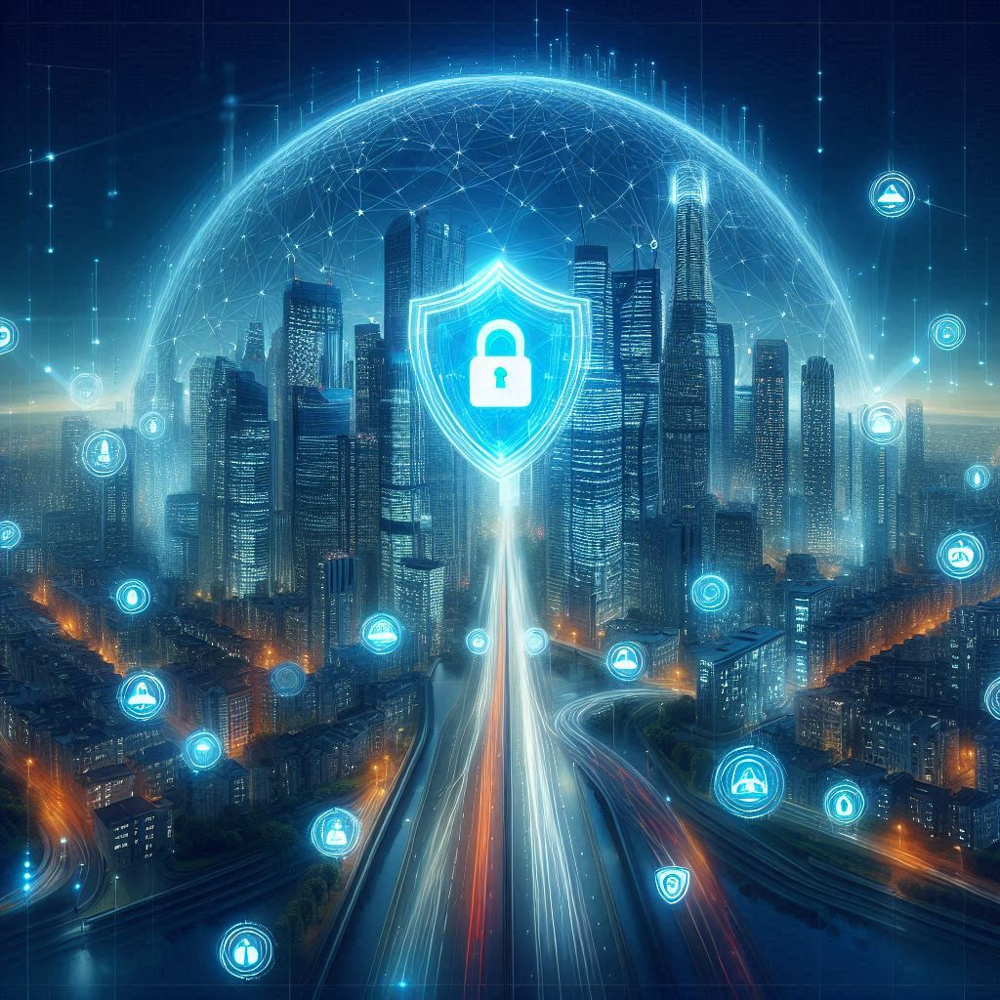

Urban Infrastructure Security Intelligence
AI-driven cybersecurity solutions securing smart cities, utilities, and urban technology frameworks.
Critical Infrastructure Cybersecurity
Securing public utilities, transportation hubs, and IoT-powered urban infrastructure against cyber threats.
Securing Smart Power & Water Networks
AI-driven threat detection protects power grids, smart water systems, and urban energy resources.
Cybersecurity for Public Services
Ensuring cybersecurity compliance in digital governance, emergency response systems, and public safety networks.